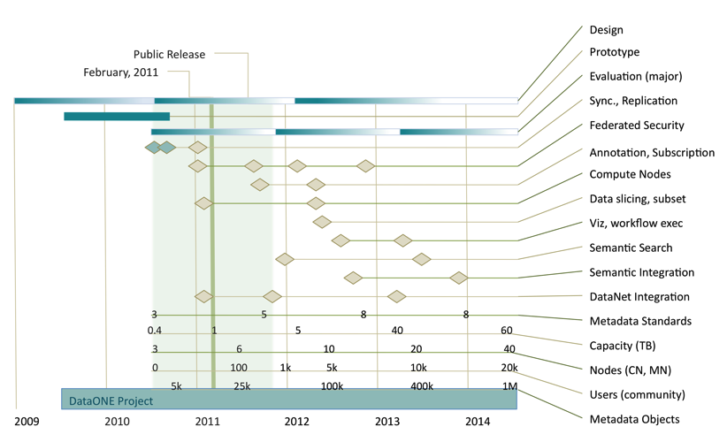

Implementation Roadmap¶
The DataONE project has an initial lifetime of five years, starting August 2009. Over this time development will occur in three major phases:
- Prototyping
August 2009 - July 2010. Prototyping activity occurred during the first year of the project and was used to evaluate fundamental infrastructure design decisions. Although the prototype period has passed, some prototyping activity will continue as a mechanism for evaluating new functionality.
- First release
Targeted for the end of 2011, the first public release of the infrastructure will be labelled “version 1.0” and will support the core DataONE functionality including replication, identifier resolution, search and discovery, and federated identity.
- Second release
Subsequent to the first public release will be a series of minor releases that progressively add functionality to the core infrastructure. It is anticipated that a streamlining and refactoring process will lead to another major release (version 2.0) towards the end of 2013.
Version Numbering¶
There are many discrete products that together form the DataONE cyberinfrastructure. Each of these products may follow their own version steps, however the version of the infrastructure being matched should be indicated using the DataONE cyberinfrastructure version identifier.
Version numbers are expressed in three parts: Major.Minor.Revision to reflect official releases of the software, where:
- Major
Is a significantly different release from the previous version number, may provide significant additional features and may implement functionality that is not backwards compatible with prior releases.
- Minor
Adds additional features to an existing release and maintains compatibility within the current major version.
- Revision
Indicates a minor change from the current version, typically used to provide bug fix releases. Will not usually add additional functionality.
Roadmap¶
Figure 1. Generalized plan for cyberinfrastructure development activities over the first five years of DataONE, indicating a gradual shift from design and significant blocks of implementation activity to adding value through expansion of services (e.g., semantic mediation services) and addition of content (e.g., new Member Nodes) and features such as the integration of new tools in the Investigator Toolkit. Shaded bars indicate emphasis of activity; diamonds indicate milestones.
Year 1¶
Initial design and prototyping.
Review of architecture and prototype
Year 2¶
Major activities scheduled for the remainder of year 2 include continued evaluation of the prototype and infrastructure re-engineering as necessary to produce a reliable core infrastructure suitable for public release (infrastructure version 1.x) in the fall of 2011. Specific actions include:
Revision of prototype implementation
Public release of DataONE cyberinfrastructure. Implementation of the revised infrastructure with particular emphasis on scalable, stable, and secure core functionality
User documentation. Development of technical user educational materials and ITK examples
Member Node addition. Selection of and deployment of three additional MNs, most likely to include the National Biological Information Infrastructure (NBII), the Consortium of Universities for the Advancement of Hydrologic Science Hydrologic Information System (CUAHSI-HIS), and the Merritt Repository Service
First implementation phases of federated identity.
Design specifications for specialized Member Node participation. Such nodes would be utilized to support experimenters requiring significant computational power, or specialized rendering or data processing capabilities.
Further progress on key aspects of semantic search, semantic integration and workflow support through activities of the respective working groups.
Years 3-5¶
Development activities enter a phase of incremental enhancement (infrastructure version 2.x) following the full public release of infrastructure, with suggestions from the DataONE Users Group (DUG) and working groups such as the Usability and Assessment Working Group. Features will be being assessed, prioritized, and incorporated into the infrastructure as appropriate. This approach will ensure ongoing progression of value-added cyberinfrastructure features for the lifetime of the project, and will also guarantee that the implementation remains well aligned with the overall requirements and expectations of the community as represented by the various working groups and the DUG. Major activities expected for the version 2.x series of infrastructure implementation (starting approximately 24 months into the project) include:
Evaluation, testing and refinement. Evaluation of the infrastructure from computational, stability, and usability perspectives; documentation and prioritization of changes that need to be made; enhancement and performance tuning of core functionality
Investigator Toolkit enhancement. Additions of tools to ITK to match enhancements to core functionality and support data life cycle activities (i.e., data collection through preservation and analysis and visualization)
Semantically facilitated search and discovery. Incorporation of outputs from semantics working groups, targeting improvement of search precision and accuracy
Addition of specialized Member Nodes. Addition of support for specialize node types to support operations requiring node characteristics other than data storage. For example, computation nodes may be employed to enable significant data processing capabilities without retrieval to the client, therefore enabling processing close to data.
New user services. Addition of data sub-setting, visualization, and integration services, to be closely aligned with deployment of specialized nodes
Global deployment of Member Nodes and Coordinating Nodes. Ongoing global deployment of all node types, including additional CNs in Europe and Oceania